16 - Feasibility Analysis¶
- Feasibility
- Wether a set of processes, if scheduled correctly, will meet their deadlines.
In RTSJ all activate ``RealtimeThread``s and ``AsyncEventHandler``s (i.e. ``Schedulable``s)
This is also known as “schedulability” and can be determined analytically given enough information about the system.
Process and Scheduling Model¶
- Fixed set of process
- Known worst-case execution times
- Independent processes
- Period (known deadlines)
- Zero time context switch
- Correctness (meet deadlines)
- Priority-based scheduling (pre-emptive, no time-slicing).
Process Parameters¶
We will call  the deadline which is a time period, in RTSF this is ReleaseParameters deadline.
the deadline which is a time period, in RTSF this is ReleaseParameters deadline.
 is the period of the period process (PeriodicParameters period in RTSJ). Feasibility analysis is not possible for aperiodic processes (i.e. no process set with an aperiodic process is feasible).
is the period of the period process (PeriodicParameters period in RTSJ). Feasibility analysis is not possible for aperiodic processes (i.e. no process set with an aperiodic process is feasible).
 is the worst case execution time (ReleaseParameters cost in RTSJ).
is the worst case execution time (ReleaseParameters cost in RTSJ).
Scheduling Approach¶
Fixed Priority Scheduling (FPS):
- RTSJ: PriorityScheduler
- Single fixed priority allocated in advance for each process.
- Runnable processes executed in order of priority
Deadline Monotonic Priority Order (DMPO):
- Allocate highest priority to the shortest deadline.
- Provably optimal for FPS
- RTSJ: Priorities specified by a programmer via SchedulerParameters
Schedulability: Utilisation Tests¶
Is there enough CPU capacity?
The sum of the fraction for CPU used by a process ( ) divided by the total number of CPUs (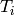) should be less than 1:
) divided by the total number of CPUs (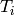) should be less than 1:
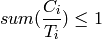
Schedulability: Utilisation Bound Test¶
Is there enough CPU capacity?
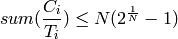
where  is the number of processes running on the CPU. That is a clever formula worked out be Liu & Leyland.
is the number of processes running on the CPU. That is a clever formula worked out be Liu & Leyland.
Schedulability: Response Time Analysis¶
Consider a worst-case scenario:
- Every process is released at the same moment
- Will they all meet their deadlines?
For example is the worst-case response time (completion time) for each process, do they still meet there deadlines?
Response Time Analysis¶
Response time analysis is necessary and sufficient. If it passes the test a system is schedulable and is not if it fails.
The response time for process is its worst case time plus any interference from other processes:
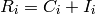
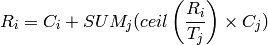
where 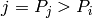.
Not that 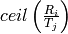 is the maximum number of times that process j is released in the time during i.
So we have this equation and we need to find the value of 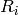 which satisfies it:
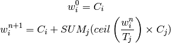
We can do this iteratively on all processes from the highest priority to the lowest using this process until it converges .
The system is schedulable if and only if (for all i):
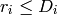
Run-time Feasibility Testing in RTSJ¶
The RTSJ Scheduler may implement tun-time feasibility checking. The default, PriorityScheduler just assumes any process set without an aperiodic process is feasible.
The scheduler manages a “feasibility set” of Schedulable``s. The ``Scheduler abstract class and Schedulable interface includes various methods for checking feasibility and conditionally changing parameters.